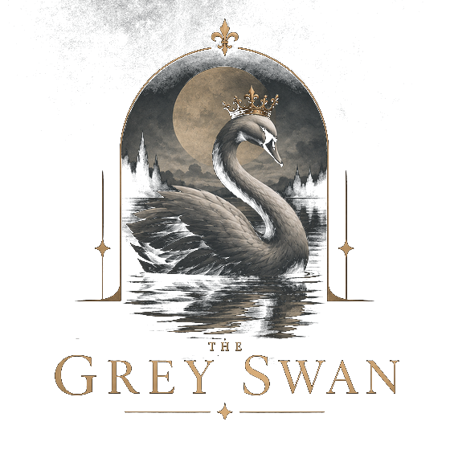

Get through the screening desk. Get reviewed.
Free tools for both sides of peer review. Pick yours. Your manuscripts never leave your browser.
Check your manuscript
See what a journal would send back before peer review: ethics and consent details, uncited figures, undefined abbreviations, missing declarations and problem references, in one report.
- Word, PDF, LaTeX, ODT and RTF
- 95+ screening checks plus reference verification
- Runs entirely in your browser
Find reviewers
Ranked, independent reviewer suggestions for any manuscript, with overlap and identity checks, public reviewing records, and a private record of who you've invited.
- Find reviewers: matched on real publications, not keywords
- Check a person: identity and links to the authors
- Invitations: who you invited and who replied, kept on your computer
Join a network of reviewers editors can count on
Verified researchers who commit to a few reviews a year, deliver on time, and get recognised for it. The first cohort is forming now with partner universities in India.
One workspace for finding reviewers
Three tabs, one job: reviewers who fit the paper, have no ties to the authors, and say yes.
Find reviewers
Found five ways
Recent papers on the same subject, leading work in its research topics, the authors the manuscript cites, your own invitation history, and the co-authors of reviewers who have said yes before.
Overlaps kept apart
Anyone who appears on papers with the authors, shares their institution or is on the exclusion list is listed separately with the evidence and kept out of the ranking.
Shortlist and invitations
Reviewers and alternates with every reason shown, a mix of countries and career stages, a personal invitation note for each, and Excel and Word reports.
Check a person
Who and where they are
A matching researcher profile, an ORCID iD that is really theirs, and an email domain that fits the stated institution.
Overlap with the authors
Shared papers or institutions with the authors, flagged with the evidence and a polite query ready to send.
The Cygnus map
For a reviewer who checks out, their co-authors drawn as the swan constellation: the best-fitting candidates shine brightest.
Invitations
Log in seconds
Name, email, keywords and manuscript ID. Update each invitation as replies and reports arrive.
See who delivers
Acceptance rate, reports submitted and turnaround, with each reviewer marked reliable, mixed or unresponsive.
Feeds the Finder
Past declines, open invitations and response times show on every candidate, so you don't ask the same people twice.

Built from the screening desk
The Grey Swan is an independent project grounded in hands-on experience of journal screening and peer review: checking manuscripts against journal requirements before review, and finding and inviting the reviewers who assess them.
The same avoidable problems came up again and again: missing ethics details, undefined abbreviations, uncited figures, and reviewer invitations that went unanswered for weeks. These tools turn that experience into checks anyone can use, so authors can submit with confidence and editorial teams can spend their time on what matters.
On the roadmap
- The Cygnus Program: the first cohort of verified reviewers, with partner universities
- Model wording: example statements for every declaration the checker asks for
- Journal profiles: ready-made settings for more journals and publishers
Work with The Grey Swan
Pre-submission screening for authors, reviewer support for journals, partnering in the Cygnus Program, or feedback on the tools: get in touch.